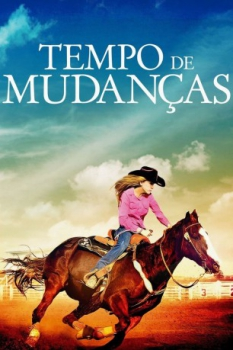

Tempo de Mudanças (2016)



Avaliação (TMDb):


6.2/10 (16 votos)
Avaliação (Usuário):
Outro Título:Rodeo Girl
País:United States, 108 minutos
Idiomas falados:Inglês, Português
Gênero(s):Família
Diretor(s):Joel Paul Reisig
Codec:MPEG-2 (DVD)
Número: 3653
Sinopse:
Priscilla vive na Inglaterra e se dedica a cavalgar para participar de torneios de exibição. Devido ao casamento da mãe, a menina é enviada para os EUA para ficar com o pai durante o verão. Ela cria um laço com seu cavalo e entra para o rodeio.
Elenco:
Kevin Sorbo, Sophie Bolen, Derek Brandon, Carrie Bradstreet, Tiffany Burns, Rose Anne Nepa, Joel Paul Reisig, Mark Boyd, Sherryl Despres, Jacqueline Labadie
Tipo de mídia: DVD5,
Legendas: Português
Alugado: Não
Tela: Anamorphic Widescreen